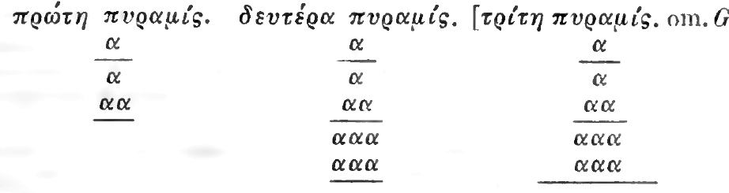

Chapter 13: Solid Pyramidal Numbers on Polygonal Bases — Greek (Hoche 1866)¶
Ἀριθμητικὴ Εἰσαγωγή, Book II, Ch. 13 (ed. R. Hoche, Teubner, 1866)
ιγ. Ἐντεῦθεν ἤδη ῥᾴδιον συνιδεῖν, τίς τε ὁ στερεὸς ἀριθμὸς καὶ πῶς ἰσοπλεύρως ὁ τοιοῦτος προκόπτει· ὁ γὰρ πρὸς τοῖς δυσὶ διαστήμασι τοῖς ἐν τῇ ἐπιπέδῳ σχηματογραφίᾳ θεωρουμένοις ἐπὶ μῆκος καὶ ἐπὶ πλάτος τρίτον διάστημα προςειληφώς, ὅ τινες μὲν βάθος, τινὲς δὲ πάχος καλοῦσιν, ἔνιοι δὲ ὕψος, ἐκεῖνος ἂν εἴη στερεὸς ἀριθμὸς ὁ τριχῆ διαστατὸς καὶ ἔχων ἐν ἑαυτῷ μῆκος, βάθος, πλάτος.
f. 0118 · p. 100Πρώτιστα δὲ οὗτος φαντάζεται ἐν ταῖς λεγομέναις πυραμίσιν. αὗται δὲ γίνονται ἐκ πλατυτέρων βάσεων μειουριζόμεναι εἰς ὀξεῖαν κορυφήν, πρῶτον μὲν κατὰ τριγωνισμὸν ἀπὸ τριγώνου βάσεως, δεύτερον δὲ κατὰ τετραγωνισμὸν ἀπὸ τετραγώνου βάσεως, ἑξῆς δὲ τούτοις κατὰ πενταγωνισμὸν ἀπὸ πενταγώνου βάσεως, εἶτα ἀνάλογον ἀπὸ ἑξαγώνου καὶ ἑπταγώνου καὶ ὀκταγώνου καὶ ἀεὶ ἐπʼ ἄπειρον. καθάπερ ἀμέλει καὶ ἐν τοῖς γεωμετρικοῖς στερεοῖς σχήμασιν ἀπὸ τριγώνου ἰσοπλεύρου ἐάν τις εὐθείας ἐννοήσῃ τρεῖς ἀπὸ τῶν γωνιῶν τῷ μήκει ἴσας ταῖς τοῦ τριγώνου πλευραῖς καθʼ ὕψος συννευούσας εἰς ἓν καὶ τὸ αὐτὸ σημεῖον, πυραμὶς ἂν ἀποτελεσθείη ὑπὸ τεσσάρων περιεχομένη τριγώνων ἰσοπλεύρων τε καὶ ἴσων ἀλλήλοις, ἑνὸς μὲν τοῦ ἐξ ἀρχῆς τριγώνου, τριῶν δὲ τῶν περιγραφέντων ὑπὸ τῶν λεχθεισῶν τριῶν εὐθειῶν. καὶ πάλιν ἀπὸ τετραγώνου ἐπιπέδου ἐάν τις τέσσαρας εὐθείας λογίσηται τῷ μήκει ἴσας ταῖς τοῦ τετραγώνου πλευραῖς ἑκάστην ἑκάστῃ πάλιν κατὰ τὸ ὕφος συννευούσας εἰς ἓν καὶ τὸ αὐτὸ σημεῖον, πυραμὶς ἂν ἀποτελεσθείη ἀπὸ τετραγώνου βάσεως τετραγωνικῶς μειουριζομένη, περιεχομένη δὲ ὑπὸ τεσσάρων μὲν τριγώνων ἰσοπλεύρων, ἑνὸς δὲ τετραγώνου τοῦ ἐξ ἀρχῆς. καὶ ἀπὸ πενταγώνου δὲ καὶ ἑξαγώνου καὶ ἑπταγώνου καὶ μέχρις οὗ βούλεταί τις προχωρεῖν, τῷ αὐτῷ τρόπῳ εὐθεῖαι ἰσάριθμοι ταῖς γωνίαις ἀπʼ αὐτῶν τῶν γωνιῶν ἀνεγειρόμεναι καὶ εἰς ἓν καὶ τὸ αὐτὸ συννεύουσαι σημεῖον πυραμίδα ἀποκορυφοῦσιν ὀνομαζομένην ἀπὸ πενταγώνου βάσεως ἢ ἑξαγώνου ἢ ἑπταγώνου ἢ ἀνάλογον. οὕτω δὲ καὶ ἐν τοῖς ἀριθμοῖς ἀπὸ μὲν μονάδος ὡς ἀπὸ σημείου πᾶς γραμμικὸς ηὐξήθη ἀριθμός, οἷον α, β γ, δ, ε καὶ οἱ ἑξῆς ἐπʼ ἄπειρον· ἀπʼ αὐτῶν δὲ τούτων γραμμικῶν ὄντων καὶ ἐφ᾿ ἓν διαστατῶν πως συντεθέντων καὶ οὐχ ὡς ἔτυχεν οἱ πολύγωνοι καὶ ἐπίπεδοι ἀριθμοὶ πλάσσονται, τρίγωνοι μὲν παρὰ μηδένα συντεθέντων τῶν γνωμόνων, τετράγωνοι δὲ παρὰ ἕνα, πεντάγωνοι δὲ παρὰ δύο καὶ ἀεὶ οὕτως. τὸν αὐτὸν δὴ τρόπον καὶ αὐτῶν τούτων τῶν ἐπιπέδων πολυγώνων ἀριθμῶν ἐπισωρευομένων ἀλλήλοις καὶ ὡςανεὶ ἐποικοδομουμένων αἱ ὁμογενεῖς ἑκάστῳ πυραμίδες γεννῶνται, ἡ μὲν ἀπὸ τριγώνου βάσεως ἀπʼ αὐτῶν τῶν τριγώνων, ἡ δὲ ἀπὸ τετραγώνου βάσεως ἀπʼ αὐτῶν τῶν τετραγώνων, ἡ δὲ ἀπὸ πενταγώνου ἀπὸ τῶν πενταγώνων καὶ ἡ ἀπὸ ἑξαγώνου ἀπὸ τῶν ἑξαγώνων καὶ τοῦτο δι᾿ ὅλου. εἰσὶν οὖν αἱ μὲν ἀπὸ τριγώνου βάσεως εὔτακτοι αὗται α, δ, ι, κ, λε, νϚ, πδ καὶ ἐφεξῆς, ὧν ἡ γένεσις αὐτοὶ οἱ τρίγωνοι ἀλλήλοις ἐπισωρευόμενοι, πρῶτος μὲν ὁ α, εἶτα ὁ α γ, εἶτα ὁ αγϚ, εῖτα πρὸς τούτοις ὁ ι καὶ ἐφεξῆς σύν τοῖς πρόσθεν ὁ ιε καὶ ἐπὶ τούτοις ὁ κα καὶ ἐξῆς ὁ κη καὶ ἐπʼ ἄπειρον. δῆλον δέ, ὅτι καὶ ὁ μείζων τῶν ἀριθμῶν κατώτατος νοεῖται, αὐτὸς γὰρ βάσις εὑρίσκεται, ὁ δὲ εὐθύς μετ᾿ αὐτὸν ὑπὲρ αὐτὸν καὶ ὁ μετ᾿ ἐκεῖνον ὑπὲρ τοῦτον, ἕως ἄν ἡ μονὰς ἐπὶ τῇ κορυφῇ φανῇ καὶ ὡςανεὶ εἰς σημεῖον ἀπομειουρίσῃ τὴν τελείωσιν τῆς πυραμίδος.

